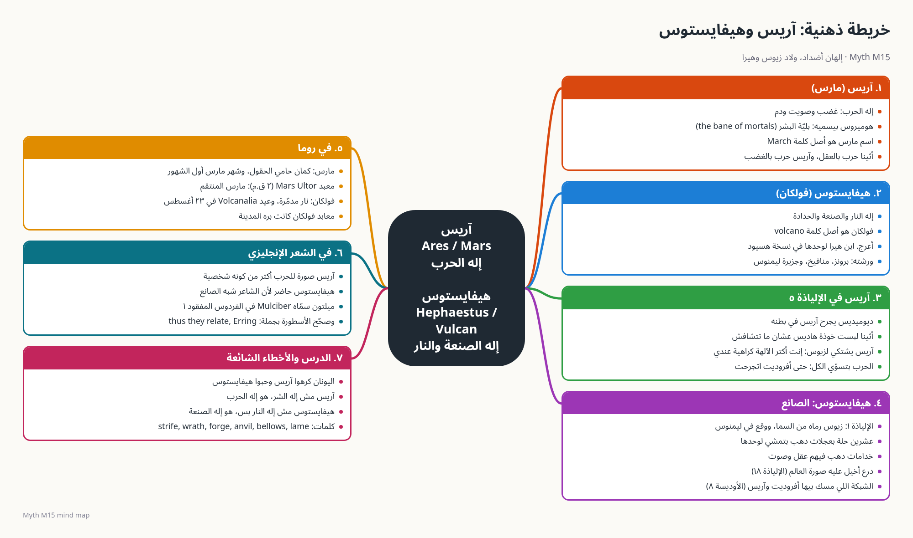

آداب الإنجليزية
: قواعد وجرامر وشعر وأساطير
⭐
0
🔥
استمر!
⚒️
الدرس M15: آريس وهيفايستوس: مارس وفولكان: الحرب والصنعة
📊
المستوى: A1
الدرس M15
🏛️
كورس الميثولوجيا
📄 حمّل PDF الدرس
📝 ملخص الدرس (عربي) PDF
📝 Lesson Summary (English) PDF
🧠 الخريطة الذهنية PDF
🧠 شوف الخريطة الذهنية للدرس

→
الدرس اللي قبله
كل دروس الكورس
الدرس اللي بعده
←